Level 75 reference · Zenith rules
Why Samurai?

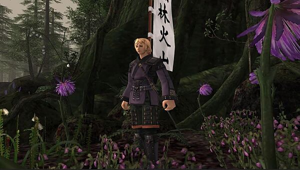
Samurai is one of the most iconic jobs of 2007-era Final Fantasy XI. Samurai started off life in FFXI in the Rise of the Zilart expansion and was relatively weak at the time, mainly filling the role of skillchain maker only with very low damage output. However, beginning in 2006 and culminating in the infamous "2 handed buff" in late 2007, Samurai received a steady string of heavy buffs bringing it to the forefront of melee DPS jobs. By the end of ToAU Samurai had become a very strong job with unrivaled TP gain, very powerful weapon skills, adjustable weapon strategies to fit the needs of the event, and the best defensive ability of any melee, all while still retaining its crown of skillchain king. These continued buffs fostered an era meme that Square Enix loved Samurai so much they continued buffing them patch after patch, even when it was the best physical damage dealing job already.
Samurai shines at all melee-oriented events like EXP/Meriting, Salvage, Dynamis, and Limbus, and unlike other melee DPS, Samurai is also quite good at non-melee friendly events such as ground HNMs because of their ability to gain TP without hitting the mob, allowing them to build skillchains to benefit Black Mages. There are very few events where having a Samurai is a detriment, which makes it an ideal first job or main job! It also is relatively easy to gear, mostly relying on items you can buy off the auction house or obtain from low level endgame like Sky. There will be some cost associated with gearing a Samurai due to the raw popularity of the job driving the prices of key items like Hagun, Fuma Kyahan, or Ochiudo's Kotes up, but once you have those pieces of gear it's relatively inexpensive compared to competitor jobs.
Abilities and Traits

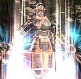
Meikyo Shisui (1) - Grants you 3000 TP, reduces cost of all weapon skills to 1000 TP. 2:00:00 recast, :30 duration.
Meikyo is a pretty great 2 hour ability, granting you 3000 TP on demand and making it so any weapon skill done while this ability is active only costs 1000 TP. It is important to note you do not gain TP while meleeing with Meikyo active, so you need to cancel the buff when you are done with your weaponskills. The optimal way to use Meikyo is to use the 2h, use one weapon skill, and then Meditate so you can start gaining TP, with this strategy you can easily get 4 weapon skills off during the ability window. The burst damage on this ability is insane once you start solo skillchaining, either with a 3 step Light or a 5 step Darkness.
Warding Circle (5) - Grants you and your party a chance to intimidate Demon Family mobs. 10:00 recast, 1:00 duration.
Pretty mediocre ability that everyone forgets exists until one person has a light bulb moment and uses it when randomly fighting a demon. Really not much to say about it, could use it in places like Dynamis - Xarcabard but randomly intimidating demons isn't exactly the most useful thing.
Third Eye (15) - Grants a buff that will cause you to dodge the next attack directed at you. 1:00 recast, :30 duration.
Third Eye is a cheeky little defensive tool that ends up being a very useful ability. This can full absorb weapon skills (even multi hit ones), abilities like Eagle Eye shot, and auto attacks, it cannot absorb AoE abilities and will actually be stripped by them. One great way to use this ability is to absorb big weapon skills with it, like you can react to a Colibri using Pecking Flurry and negate hundreds of damage. You can also use this as an easy way to get Utsusemi back up, since Utsusemi: Ichi has such a long cast time and is interruptible, casting Third Eye first to guarantee it goes off is a great use. See Seigan for how it interacts with that ability.
Hasso (25) - Grants Haste, Accuracy, and Strength when using 2 handed weapons. Increases casting time and recast of spells. 1:00 recast, 5:00 duration. Does not stack with Seigan.
This is a contender for the strongest ability Square Enix has ever put into the game. The numbers behind this are: 10% Job Ability Haste, 10 Accuracy, and a scaling amount of Strength depending on the level of your Samurai, the maximum amount being +10. If you look at the recast and duration, this ability can have 100% uptime and the only time you wouldn't want it on is when you are using its sister ability Seigan (or casting spells). Job Ability Haste is one of the rarest and most powerful stats in the game, as it isn't counting towards your other Haste sources like Equipment and Magical which you can and do easily cap in many situations. Haste gets better the more haste you have, so this ability both makes all your other haste better and is made better by those other sources of haste. The Accuracy and Strength also are just nice bonuses all around. It's hard to state just how powerful this ability is, in some situations this ability alone can increase your DPS by 40-50% or more. Please remember this significantly increases the cast time of spells, like Utsusemi, and in many situations you will want to click this buff off manually before you cast Utsusemi.
Meditate (30) - Increases the Samurais TP by 200 every 3 seconds, 5-9 times. 3:00 recast.
Meditate is the signature ability of Samurai and is built into the job identity of Samurai being a master skillchainer and TP gainer. Base meditate will grant you a total of 1000 TP over 15 seconds. Meditate with the AF helm or Relics Hands on will grant you a total of 1200-1400 TP over a maximum 21 seconds. Meditate with the AF Helm and Relic Hands on will grant you a total of 1400-1800 TP over a maximum of 27 seconds. This ability allows for some serious TP generation and is exceptionally useful for building TP when there is no mob around to hit. Meditate is one of the reasons that Samurai is so very good at end game, no other job can build TP while walking between camps in Dynamis, before a Kirin fight, or without even being in the main party when fighting Tiamat. If you have enough haste or luck, this ability also can allow you to self skillchain. Also when meditating, you can more reliably pull off solo skillchains by using the ability right before you are about to swing, and timing your WSes around the meditate tic timer to gain TP as fast as possible on your closing skillchain WS.
Seigan (35) - Augments Third Eye when using 2 handed weapons. 1:00 recast, 5:00 duration. Does not stack with Hasso. Increase casting time.
Seigan as an ability does absolutely nothing, but it is paired with Third Eye to create an exceptionally powerful defensive tool that is one of the main reasons that Samurai stands as the tankiest DPS job. While Seigan is active, Third Eyes recast is shortened to 30 seconds and will now absorb more than one attack. The amount of attacks absorbed is random, but the longer Third Eye has been up the lower chance it will stay on after absorbing an attack. This makes Seigan+Third Eye strong defensively, but inconsistent compared to other defensive tools like Utsusemi. Third Eye also has the chance to counter mob attacks with Seigan up. Please remember this significantly increases the cast time of spells, like Utsusemi, and in many situations you will want to click this buff off manually before you cast Utsusemi.
Sekkanoki (60) - Limits the cost of the next WS to 1000 TP, 5:00 recast.
Sekkanoki is the new addition to Samurai on Eden, generally you use it by saving your TP to 2000+ then activate Sekkanoki to do two quick weaponskills for a skillchain. Popular skillchains for this are Rana>Gekko for Darkness or Yuki>Gekko for Fragmentation. The weaponskill you do under Sekkanoki's buff (the first WS) has some odd properties, it will not gain any TP bonus from any equipment/ability including Hagun, it also will activate items like Hachiman Jinpachi +1 which takes this item from pretty useless to a really fun niche item. This ability shines in short content like BCNMs, ENM, KSNMs where you can meditate to 2000+ TP before even starting the fight and burst out a giant skillchain to open, it's also useful for making skillchains for your Black Mages on end game content.
Store TP (Level 10-30-50-70) - Grants additional Store TP, up to 25 at 75.
When doing your Store TP calculations, make sure to remember Samurais gets +25 from traits, and can have an additional +10 from merits for a total of +35 before equipping a single piece of gear. This makes 6 hitting relatively easy on Samurai with a Great Katana, and 5 hitting even possible with Polearm after gear is added.
Zanshin (20) - When an attack is missed, grants a chance to automatically attack again.
It is believed that Zanshin has a 45% activation rate, and can activate not only on misses, but shadows, counters, guards, and even a scenario where 0 damage is dealt. The extra Zanshin attack also has +34 bonus accuracy applied to it. This is an interesting ability to talk about, it makes having lower accuracy on Samurai a lot less punishing than most jobs, although you really don't want to be sitting at low accuracy still. This also artificially inflates Samurai's accuracy percentage as the hard cap of 95% hit rate can be broken by Zanshin procs.
Merits
Category 1: Category 1 only really has two things worth meriting and both are exceptionally important.
Meditate Recast: Meditate's TP generation is a defining ability for Samurai, with 5 merits you can lower the recast down to 2:30 seconds.
Store TP: Each Store TP upgrade gives +2 Store TP, for a total of +10 Store TP at 5 merits. This is a crucial merit for any Samurai to max as fast as possible because it is very necessary for most popular 6 hit builds. 10 Store TP is a lot and if you need to make this up in gear it usually is taking 1-2 very important slots away from better stats.
Category 2: This is much more flexible than Category 1, all 4 merits have some.....merit.
Shikikoyo: Shikikoyo allows for you to give a party member all of your TP over 1000 on a base 15 minute cool down. This can be used to funnel TP to party members to make skillchains or to build up the parties TP reserves before a mob is engaged. I think this is a fantastic 1 point merit that has a lot of utility for linkshell events and is great if you are coordinated and on the same page as your other damage dealers as far as building skillchains.
Blade Bash: Blade Bash allows you to stun a mob and sometimes also apply a Plague effect. This can be a serious life saver pretty much anywhere. Mob casting Blizzaga XIV on you? Bash it. Ninja mob in dynamis not dead and below 20%? Better bash that thing. It's a fantastic merit I would recommend everyone have a point in at least. Lowering the recast with extra merits is pretty nice too, this thing just comes in handy in so many situations.
Ikishoten: Ikishoten adds a 30 more TP (And some bonus for Store TP traits) on any Zanshin attack you land. This is an interesting merit, there are people that actually have figured out ways to play around Ikishoten's bonus TP, but the chance that Zanshin even procs if you are at capped hit rate is less than 2.5% of the time. There may be room for this in a Samurai's arsenal, but it is going to be extremely high level game play for very low potential rewards.
Overwhelm: The king of Samurai merits and proof that Square Enix loves this job. Overwhelm gives a flat percentage damage increase to any weapon skill you perform in front of the mob. The first three merits into Overwhelm give 5% each, and the next two merits give 2% each, for a total of 19% weapon skill damage. The "downside" to this merit is you need to be in front of the mob, which means you will constantly have to reposition before weaponskilling. Landing Overwhelm on every WS is probably the number one difference between good and bad Samurais.
Meriting Priority Order:
This is simply my opinion and honestly the order in which you merit things can change depending on the player so take this with a grain of salt. I would do:
Overwhelm 5/5 > Store TP 5/5 > Meditate 5/5 > Combat Skill Merits 8/8 > Blade Bash 1/5 > Shikikoyo 1/5 > Crit 4/4 > STR 5/5 > HP 8/8 > Category 2 of choice.
Overwhelm and Store TP are just mandatory to have on Samurai, while Meditate and Combat Skill Merits are huge DPS increases over time. After that you start to get into situational merits that don't feel quite as important.
Combat Skill merits will obviously depend on the player and what other jobs they care about. Samurai can make use of Great Katana, Polearm, and Archery but at the end of the day you can only have a total of 20 Combat Skill merits so you need to make decisions about which to take. Great Katana obviously will have the most application to Samurai as a whole, but remember that half or more of a Samurai's great katana damage comes from weapon skills that don't really care about Attack or Accuracy. Polearm and Bow on the other hand are lower skill, so you will likely need the accuracy, and use weapon skills that are the most attack hungry weapon skills in the game.
Sub Jobs

Warrior is the premiere sub job for Samurai if you want to do damage, it's the one you will want to use the most and likely is the one you will use the most. Berserk is the hallmark ability of /WAR, it gives a +25% attack increase and a -25% defense decrease, this is a massive amount of attack and will increase your damage significantly. This doesn't synergize well with Tachi: Gekko, given that Gekko is generally always attack capped, but does hugely benefit Penta Thrust due to its negative attack modifier. Even without benefiting Gekko, Berserk adds so much damage to your auto attacks it's still insanely good. Double Attack is the next best thing, a raw +10% passive increase in swings that can also proc on WSes (twice on Penta Thrust!). Warcry is a decent on-demand attack boost for the entire party, giving around 5% attack. I would definitely recommend you make sure to time this ability correctly, as a Warrior's Warcry is significantly stronger and your Warcry does overwrite it. Provoke is the last thing Warrior sub provides, which generates 1800 Volatile Enmity allowing you to gain the mobs attention and position it for party play. Warrior sub is great for most events unless you need the defensive tools that Ninja sub provides.

Ninja acts as a foil to Warrior sub, focusing on the defense aspect of the game as opposed to offense. /NIN offers Utsusemi: Ichi and Utsusemi: Ni, casted buffs that negate incoming non-AoE (and some Aoe) hits. This nearly completely nullifies damage taken via auto attacks, is great for hiding from dangerous TP moves, and can absorb high damage nukes as well. The only things that pierces Utsusemi are AoE nukes and certain AoE weaponskills. With Third Eye you can also more reliably get Utsusemi up after it goes off, and with a mixture of Utsusemi, Seigan, Third Eye, PDT, and MDT gear, Samurai becomes by far the most durable DPS job. You will be asked to use this sub very often, so make sure you have it available.

Thief is a well known sub from 2004 era FFXI that centers around high-damage single WSes and enmity management. Sneak Attack forces any WS to critically hit, including Samurai WSes which usually do not have the ability to crit on their own. Trick Attack allows you to funnel the enmity of a WS onto the person in front of you, usually a tank, allowing you to not pull hate and to give hate to your frontline. Overall this sub has lost a lot in its transition to Eden, people just don't play that style anymore, instead opting to forego tanks entirely and use a Sam/nin or Sam/war as both DPS and Tank. I've only used this sub on Eden a couple times, usually on very high level mobs where I would have been better off playing an entirely different job.
Weapon skills
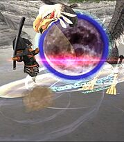 |
Tachi: Gekko - The bread and butter weapon skill for Samurai, your highest damage Great Katana weapon skill barring relic. Due to the Attack/Accuracy bonuses, the only thing worth stacking for this weapon skill is Strength and the rare Double Attack/TP Bonus.
|
|---|---|
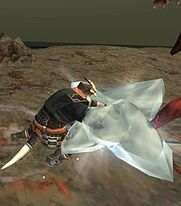 |
Yachi: Yukikaze - Situationally useful weapon skill for building skill chains, the weakest of the trio of Yuki/Gekko/Kasha.
|
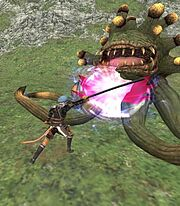 |
Tachi: Kasha - Situationally useful weapon skill for building skill chains, mainly Light.
|
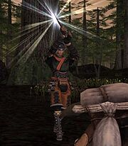 |
Tachi: Kaiten - Insanely powerful weapon skill that is only obtainable with a relic weapon, this weapon has very high FTP and unlike all the other Great Katana weapon skills can benefit from Attack buffs like Chaos Roll/Berserk/Food. In theory the strongest weapon skill Samurai gets unless the mob has very high defense.
|
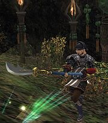 |
Penta Thrust (Polearm) - Penta Thrust is a powerful tool in a Samurai's arsenal as a weapon skills that scales well with buffs and a piercing damage option. This weapon skill is balanced around the fact it has a negative attack modifier, which means it takes more Attack to cap than a normal WS. When you start piling on the Attack buffs or the mob has low defense, this WS is quite simply beastly. Good for piercing weak mobs and high buff situations.
|
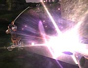 |
Tachi: Rana - This is Samurai's unlockable Nyzul Isle weaponskill and is also tied to the unreleased mythic weapon. This weaponskill is generally a skillchain maker, allowing for you to open darkness for other jobs or even for yourself with self skillchaining. It's not actually a bad weaponskill, but lacks much practical application because it doesn't get any of the Attack or Accuracy bonuses that the other Great Katana WSes benefit so heavily from.
|
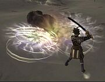 |
Tachi: Jinpu - Jinpu is a hybrid weaponskill which means it hits on both the physical and the magical defenses of a monster. Jinpu loves Magic Attack Bonus items as well as Attack items and has a decent STR modifier to boot. This weaponskill does very well against fodder mobs, similar to Penta Thrust or Rana, and it also is great against mobs that take increased magical damage like Wamouraprinces when stretched or Qutrubs.
|


Skillchains to know

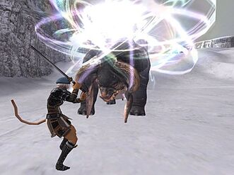
Samurai has the ability to make solo skillchains with the use of their 2h Meikyo Shisui or just proper timing with Meditate. These are the basic solo skillchains you will likely use the most and want to know:
- Rana > Gekko = Darkness
- Yukikaze > Gekko = Fragmentation
- Yukikaze > Gekko > Kasha = Light
- Yukikaze > Kasha > Yukikaze > Kasha > Gekko = Darkness
Store TP
One of the most important parts of excelling at Samurai is in gear planning and knowing how much Store TP you need to lower your hits to weaponskill. This is typically called an "X-hit", with X standing for the amount of hits necessary to WS again, so a Great Katana usually would have a "6-Hit Build" with enough Store TP to WS every 6 hits (This includes WS as a hit, so 5 Melee+1 WS). In order to figure this out you can use a wiki and math, or just use a Store TP Calculator like this one built by Zajin. I'll run through an example of a 6-hit Great Katana build:
With a 450 delay Great Katana you would need to have 46 Total Store TP to achieve 167 TP a hit, which equals 1002 TP in 6 hits. Just for being a 75 Samurai you have passive Store TP(STP)+25. You can also should merit Store TP for an additional STP+10, so you passively have STP+35. This means you need to equip gear equalling out to 11 Store TP in order to achieve this build, you could equip a Rajas Ring (5)+Brutal Earring(1)+Hachiman Kote(8) to equal 14 STP. You could also use Carbonara (6) + Rajas (5) + Brutal (1) and keep your hand slot open for Dusk Gloves. There's many different ways to do Store TP, and this is just a basic way without even talking about changing your WS gear to have more or less STP to perfect your 6 hit.
If you are going to use a Polearm you should aim for a 5-hit build, as Polearm's huge delay lets you do some sick STP builds. I'd recommend gearing with the assumption of landing 3 hits on your Penta Thrusts because it's unlikely you will land all 5 hits every time. There are example 5-hit Polearm builds (and 6-hit Great Katana builds) that factor in this assumption in the gear sets posted at the end of this guide.
Weapons

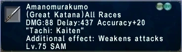
Amanomurakumo - Samurai's big daddy king of all weapons, the Amano. I'll break down the multiple elements of this weapon that lead it to being extremely powerful and also one of the strongest relic weapons in 75 cap era.
- Tachi Kaiten - This weaponskill is insane. It is probably the strongest weaponskill in 75 cap era when you are fighting non-HNM level enemies with proper buffs. It builds Light/Double Light very easily with plenty of common weaponskills. Sekkanonoki allows you to bust out Kaiten>Kaiten lights like candy, which is some of the highest and easiest on demand burst a job can get. This weaponskill only feels bad when you are fighting high level, high defense enemies, so it isn't great on HNMs.
- Relic Proc - Amano occasionally hits for 2.5x damage as its relic proc. You will sometimes crit for 800+ damage auto attacks with this weapon.
- DPS - Highest DPS great katana, significantly higher damage than Hagun and faster delay. This thing puts out white damage like a monster and swings Sam back towards being a 55%WSD/45%AA split. The problem with it being Delay: 437 is you will need to gear differently to 6 hit with an Amano than you do with a normal delay great katana. The base damage also makes it good for Tachi: Jinpu when that WS is applicable.
- Accuracy+20 - In most situations you will auto cap accuracy on Samurai with Amano, really only needing to worry about hit rate on 85+ HNMs.
- Weakens Attacks - Kind of unimportant but it is noticable when this -10% attack down procs, makes an already very tanky DPS into a tankier DPS.
All of this adds together to making Amanomurakumo a game changing relic or Samurai, myself and many other people would put this as either the 2nd or 3rd best relic in era only really competing with Bravura. This weapon gives you an unmatched ability to carry the DPS meters unlike you could do without it. The only detractor is that this weapon is not built to fight HNMs, if you are a person that spends the majority of your time camping/fighting level 85+ monsters with high defense, Amano is not going to feel strong. If you spend time doing things like Salvage, Assaults, Einherjar, Meriting, Dynamis, Limbus, ENMs, KSNMs, BCNMs, Nyzul isle, or any other multitude of events that fight mid level mobs, this weapon is pretty overpowered.

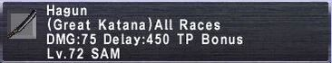
Hagun - The most iconic and important weapon for 75-era Samurai! Hagun's a pretty simple weapon at heart, the damage is okay, the delay is completely normal, but it has this "TP Bonus" on it. TP Bonus is essentially treating your weapon skills like you have +1000 TP when you use them, i.e. if you weaponskill directly at 1000 TP, it will do the damage of a weaponskill at 2000 TP. This ends up being a huge damage increase for Tachi: Gekko/Kasha/Yukikaze and makes Hagun your go-to weapon at 75 unless you have a relic. The only time this weapon is not very useful is when you are weaponskilling strictly at 3000 TP, as the TP bonus does not allow you to go above 3000 TP and you would be better off with a higher base damage Great Katana.

Onimaru - In era FFXI this was usually seen as an affordable Great Katana to use as a starting item before you saved up for the expensive Hagun. On Eden currently, Hagun is extremely inexpensive, which makes this niche not viable for Onimaru. Where this Great Katana can shine is use in Jinpu and Rana strategies. The high base damage combined with Attack+18 Accuracy+5 hidden stats do synergize very well with Jinpu and Rana, who don't care much for the TP Bonus of Hagun. Its main competition is Pachipachio which has similar stats, but also has 11 less accuracy than Onimaru, on a job that already suffers with accuracy. Pachipachio has the ability to 5 hit with significant STP gear investment though, which can give it a leg up. I think the place I'd like to see Onimaru used is something like Floor 1 Bhaflau Remnants or Arrapago Remnants, where Jinpu shreds the mobs and your gear isn't unlocked enough to 5 hit or eat the accuracy loss of Pachipachio.

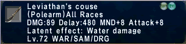
Leviathan's Couse - This is the best Polearm samurai can get likely forever on Eden, with stats that beat out even Tomoe. It has the highest base damage of any Polearm Samurai can get at level 75 as well as a pretty decent chunk of attack for the attack hungry Penta Thrust. The main issue with this item is that extreme rarity, Waking the Beast is a huge pain in the butt to run and the drop rate is not good at all. It's a great item, but is a relatively small upgrade over other much easier to get options. The latent effect is activated when a Leviathan is out in your party, which is unlikely to ever happen so it doesn't really matter.

Tomoe - When people think Samurai meriting weapons of era, this is the first thing that will come to mind. This polearm has a great mix of stats with the Acc/Atk+5, allowing for you to usually swap at least 1 accuracy item for a more offensive option. I'd still rate Leviathan's Couse as a better weapon, but Tomoe is so easy to get and really close in power that I'd recommend just getting this instead of spending time gunning for the Couse.

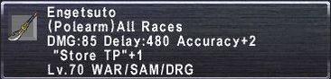
Engetsuto - This is Samurai's most common polearm, it's buyable from the AH and is relatively inexpensive while still being exceptionally strong. The NQ actually outperforms the HQ because it requires significantly more TP to 5 hit with the +1 because of the lower delay. Overall a great polearm for use in merit parties, piercing damage limbus floors, or just situations where your fighting very weak mobs. This Polearm is replaced by Leviathan's Couse or Tomoe.
Gear Sets
| Hagun TP (Salvage) https://www.ffxiah.com/item-sets/392768 | |
|---|---|
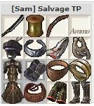 |
Stat Priorities: STP (Until 6 hit) > Haste (Until 25%) > Accuracy (Until Capped) > Attack > Strength.
401 Accuracy (Max Merits, Hume DEX, Hasso) which is around where I aim to be for many events. This set 6 hits without needing to do anything fancy in your WS gear. The first set pictured is higher accuracy/attack, the second set has 1% more haste. Hagun Sam tends to need accuracy for many events, which can make both sets viable depending on your accuracy needs. The top set has 6 more accuracy, 14 more attack, 2 less STR, and 1% less haste. Haste being the best stat in the game makes this actually close enough that you probably won't see any difference between these two sets. |
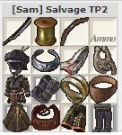 | |


| Hagun TP (No Salvage) https://www.ffxiah.com/item-sets/378264 | |||||||||||||||||||||||||||||||||||||||||||||||||||||||||||||||||||||||||||||||||||||
|---|---|---|---|---|---|---|---|---|---|---|---|---|---|---|---|---|---|---|---|---|---|---|---|---|---|---|---|---|---|---|---|---|---|---|---|---|---|---|---|---|---|---|---|---|---|---|---|---|---|---|---|---|---|---|---|---|---|---|---|---|---|---|---|---|---|---|---|---|---|---|---|---|---|---|---|---|---|---|---|---|---|---|---|---|---|
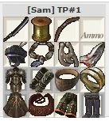 |
Stat Priorities: STP (Until 6 hit) > Haste (Until 25%) > Accuracy (Until Capped) > Attack > Strength.
398 Accuracy (Max Merits, Hume DEX, Hasso), so if you're doing content that requires more accuracy you could slot in Aces Helm. This set is a a flexible and approachable pre-Salvage set. The Hachiman Kote allow you to weaponskill in no extra store TP gear, but you obviously lose the haste from Dusk Gloves. There are "better" sets but they require some very expensive very niche items I would not buy on Eden, instead just gun for salvage and Usukane gear. | ||||||||||||||||||||||||||||||||||||||||||||||||||||||||||||||||||||||||||||||||||||
| |||||||||||||||||||||||||||||||||||||||||||||||||||||||||||||||||||||||||||||||||||||

| Hagun YGK https://www.ffxiah.com/item-sets/378265 | |||||||||||||||||||||||||||||||||||||||||||||||||||||||||||||||||||||||||||||||||||||
|---|---|---|---|---|---|---|---|---|---|---|---|---|---|---|---|---|---|---|---|---|---|---|---|---|---|---|---|---|---|---|---|---|---|---|---|---|---|---|---|---|---|---|---|---|---|---|---|---|---|---|---|---|---|---|---|---|---|---|---|---|---|---|---|---|---|---|---|---|---|---|---|---|---|---|---|---|---|---|---|---|---|---|---|---|---|
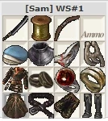 |
Stat Priorities: Store TP (Until 6 hit) > Strength.
Samurai Weaponskills are all 1 hit, which means they have +100 accuracy inherently, they also have large inherent attack bonuses. What this means is that you really don't have to care about Accuracy or Attack when gearing for Yukikaze, Gekko, or Kasha, all you want to do is stack Strength as it is the modifier of the weaponskills. | ||||||||||||||||||||||||||||||||||||||||||||||||||||||||||||||||||||||||||||||||||||
| |||||||||||||||||||||||||||||||||||||||||||||||||||||||||||||||||||||||||||||||||||||

| Tachi: Rana https://www.ffxiah.com/item-sets/383345 | |||||||||||||||||||||||||||||||||||||||||||||||||||||||||||||||||||||||||||||||||||||
|---|---|---|---|---|---|---|---|---|---|---|---|---|---|---|---|---|---|---|---|---|---|---|---|---|---|---|---|---|---|---|---|---|---|---|---|---|---|---|---|---|---|---|---|---|---|---|---|---|---|---|---|---|---|---|---|---|---|---|---|---|---|---|---|---|---|---|---|---|---|---|---|---|---|---|---|---|---|---|---|---|---|---|---|---|---|
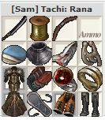 |
Stat Priorities: Accuracy (Until capped) > STR > Attack.
This set has 403 Accuracy (Max Merits, Hume DEX, Hasso). There's a lot of flexibility in this set depending on your accuracy needs. Potent Belt, Toreador's Ring, Alky Bracelets, and more can make sense. It's worth mentioning Hagun gives +25 Accuracy to Rana if you are using it, but if you use Sekkanonoki you do not get that bonus accuracy. Given that Rana's main usage is making darkness with Sekkanonoki, I don't really count Haguns accuracy, but if you are just using Rana raw like that, you can swap in some attack/strength. | ||||||||||||||||||||||||||||||||||||||||||||||||||||||||||||||||||||||||||||||||||||
| |||||||||||||||||||||||||||||||||||||||||||||||||||||||||||||||||||||||||||||||||||||

| Tachi: Jinpu https://www.ffxiah.com/item-sets/392943 | |||||||||||||||||||||||||||||||||||||||||||||||||||||||||||||||||||||||||||||||||||||
|---|---|---|---|---|---|---|---|---|---|---|---|---|---|---|---|---|---|---|---|---|---|---|---|---|---|---|---|---|---|---|---|---|---|---|---|---|---|---|---|---|---|---|---|---|---|---|---|---|---|---|---|---|---|---|---|---|---|---|---|---|---|---|---|---|---|---|---|---|---|---|---|---|---|---|---|---|---|---|---|---|---|---|---|---|---|
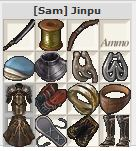 |
Stat Priorities: Accuracy (Until Capped) > Magic Attack > Attack > STR.
This weaponskill doesn't function much differently from Penta Thrust or Tachi: Rana in that you need Accuracy, Attack, and Strength in the right balance. How it does differ is that you can use Magic Attack in a Jinpu set, in era there's very little of that gear but Novio Earring and Moldavite Earring are the easy swaps. Uggalepih Pendant maybe could be useful but I have my doubts and I don't think anyone has really looked at it. | ||||||||||||||||||||||||||||||||||||||||||||||||||||||||||||||||||||||||||||||||||||
| |||||||||||||||||||||||||||||||||||||||||||||||||||||||||||||||||||||||||||||||||||||

| Polearm TP (Standard) https://www.ffxiah.com/item-sets/377918 | |||||||||||||||||||||||||||||||||||||||||||||||||||||||||||||||||||||||||||||||||||||||||||||||||||
|---|---|---|---|---|---|---|---|---|---|---|---|---|---|---|---|---|---|---|---|---|---|---|---|---|---|---|---|---|---|---|---|---|---|---|---|---|---|---|---|---|---|---|---|---|---|---|---|---|---|---|---|---|---|---|---|---|---|---|---|---|---|---|---|---|---|---|---|---|---|---|---|---|---|---|---|---|---|---|---|---|---|---|---|---|---|---|---|---|---|---|---|---|---|---|---|---|---|---|---|
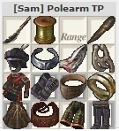 |
Stat Priorities: Store TP (Until 5 hit) >Haste (Until 25%) > Accuracy (Until Capped) > Attack > Strength
This set would hit 406 accuracy (Hume DEX, Max Merits, Hasso) assuming the usage of Bream Sushi. If you are doing city dynamis you can just drop the Sushi for Meat and this set still works great. You do need a 4 hit Penta Thrust to connect to be able to 5 hit with this set, you can make it more reliable by weaponskilling in STP feet. | ||||||||||||||||||||||||||||||||||||||||||||||||||||||||||||||||||||||||||||||||||||||||||||||||||
| |||||||||||||||||||||||||||||||||||||||||||||||||||||||||||||||||||||||||||||||||||||||||||||||||||

| Penta (Standard) https://www.ffxiah.com/item-sets/397091 | |||||||||||||||||||||||||||||||||||||||||||||||||||||||||||||||||||||||||||||||||||||||||||||||||||
|---|---|---|---|---|---|---|---|---|---|---|---|---|---|---|---|---|---|---|---|---|---|---|---|---|---|---|---|---|---|---|---|---|---|---|---|---|---|---|---|---|---|---|---|---|---|---|---|---|---|---|---|---|---|---|---|---|---|---|---|---|---|---|---|---|---|---|---|---|---|---|---|---|---|---|---|---|---|---|---|---|---|---|---|---|---|---|---|---|---|---|---|---|---|---|---|---|---|---|---|
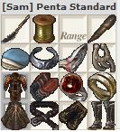 |
Stat Priorities: Store TP (Until 5 hit) > Accuracy (Until Capped) > Attack > Strength > Dexterity.
This set has 405 Accuracy (Hume DEX, Sushi, Hasso) which is right around what you need for Greater Colibri merit parties. Given that you are using Sushi, accuracy is generally not really needed and you can really just spam as much Attack/STR as you can get into this set. A more realistic version of this set probably drops Byrnie+1 for Haubergeon+1 and uses a Mermans Earring. | ||||||||||||||||||||||||||||||||||||||||||||||||||||||||||||||||||||||||||||||||||||||||||||||||||
| |||||||||||||||||||||||||||||||||||||||||||||||||||||||||||||||||||||||||||||||||||||||||||||||||||

| Physical Damage Taken https://www.ffxiah.com/item-sets/378283 | |||||||||||||||||||||||||
|---|---|---|---|---|---|---|---|---|---|---|---|---|---|---|---|---|---|---|---|---|---|---|---|---|---|
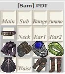 |
Stat Priorities: Damage Taken -% > Physical Damage Taken -% > Parry and Other Defensive Stats.
There's a lot of personal expression in this set, personally I like to keep my Waist/Neck/Earrings open for offensive items so I don't lose all offensive stats from swapping into this set. I could easily see an argument for using items like Parrying Torque, Boxer's Mantle, Evasion Earrings, Warwolf Belt, and other things that add fringe defensive stats if your only goal is to survive no matter what. | ||||||||||||||||||||||||
| |||||||||||||||||||||||||

| Magical Damage Taken https://www.ffxiah.com/item-sets/378284 | |||||||||||||||||||||||||||||||||||||||||
|---|---|---|---|---|---|---|---|---|---|---|---|---|---|---|---|---|---|---|---|---|---|---|---|---|---|---|---|---|---|---|---|---|---|---|---|---|---|---|---|---|---|
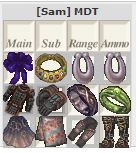 |
Stat Priorities: Damage Taken -% > Magical Damage Taken -% (Until Cap) > All Resist Above 1 > Magic Defense Bonus.
MDT caps at 50%, with Shellra V you only need 23% from your gear, with Shell IV you need 28%. Personally I aim to have more than 1 elemental resist in every element for this set, because it opens up the ability for you to 1/8th and 1/16th resist spells which you won't have without. It's actually relatively easy to cap MDT with the wealth of gear options available, so items like Ribbons and Shadow Ring aren't too detrimental. | ||||||||||||||||||||||||||||||||||||||||
| |||||||||||||||||||||||||||||||||||||||||

Misc. Items

|
Best in slot ring for TP sets in Salvage and Assaults. Can be fit into an Ashitacast or Gearswap to detect if you are in those zones. |
|---|---|

|
A very good Weaponskill earring at night, with double the amount of STR as a Triumph/Bushinomimi. |

|
This is a straight upgrade over Merman's Earring in the daytime and makes a great piece for Penta Thrust. |

|
This item applies a Poison effect to you when equipped and you have your weapon drawn, very useful for waking up from being slept in Dynamis or Merit Parties. Once you have it you will wonder how you played without it. |

|
Very powerful earring when you are subbed Dragoon, this strategy was relatively popular in era but does not see much play on Eden. Might have some BIS case uses, but I struggle to find them. |
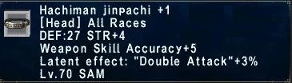 |
This items latent effect works when Sekkanonoki and Meikyo Shisui are active, which is kind of cool. From the math I have seen, this item is below Maats Cap in power, equal to Shura Kabuto +1, and slightly ahead of Wyvern Helm +1. |
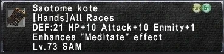 |
You will always want to carry these and swap them in for Meditate, they provide massively increased TP gain from that ability. |
| Regen Items | When you are standing around it's a good idea to have Regen items equipped in order to passively gain HP. |
| Medicines | A sign of a great player is an inventory full of medicines. The linked list includes every medicine I think a Samurai should carry with them at all times, they save runs and you never know when you are going to need them. |


Food
For tips on food I'd recommend looking at the food guide that Falzum and I put together here:
Food guide by Falzum and Falaras
Looking Forward
7/15/26: The latest patch released Onimaru, a strong era GKT that has questionable uses for us on Eden. Looking forward we are mainly waiting on the Mythic Great Katana, an item that could be a complete flop or game breakingly good in 2026 Edens meta with Jinpu spam. Absolute Virtue and Pandemonium Warden also drop items that are direct upgrades off of BIS for us, and a GKT that could be interesting. That's about it except for maybe a couple small assault items that haven't been released.
Adapted from Eden Wiki: Samurai Guide by Falaras · Contributors and history · CC BY-SA 4.0. Revision 46953. Layout, links and optional background text adapted for Zenith.